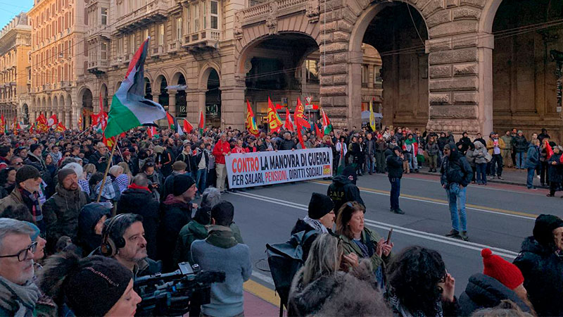

Noticias de Izquierda
Jornada de huelga general en Italia contra Meloni y el rearme militar

Saved on: Oct 2026
Noticias de guerra
Guerra de Ucrania, en directo: Rusia responde al rearme militar de la OTAN

Saved on: Oct 2026